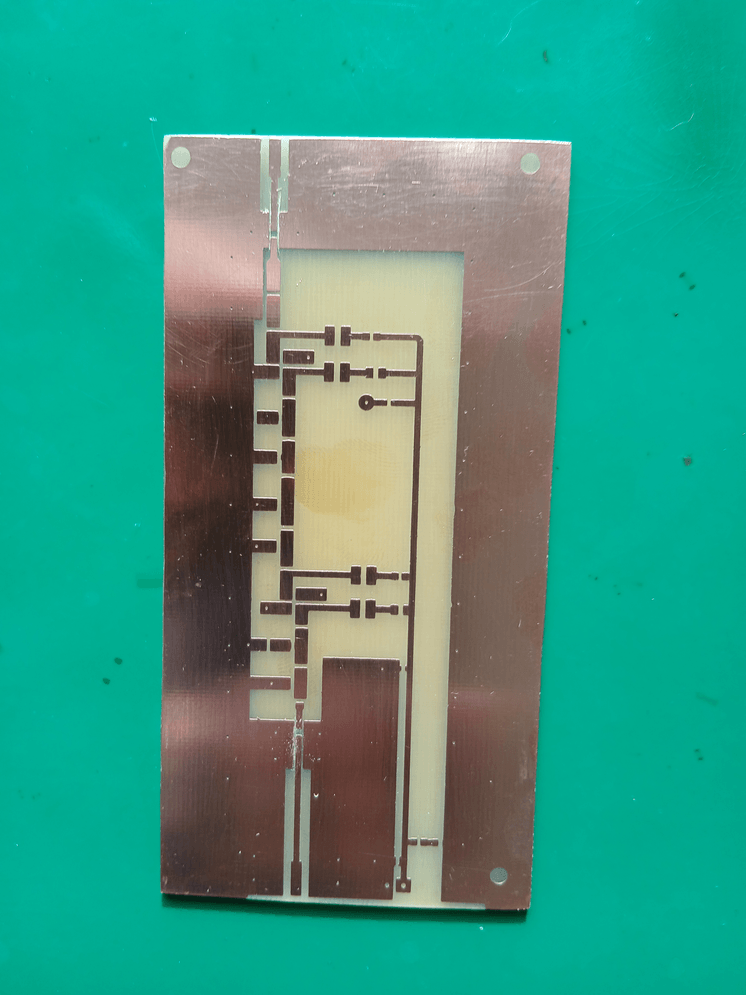
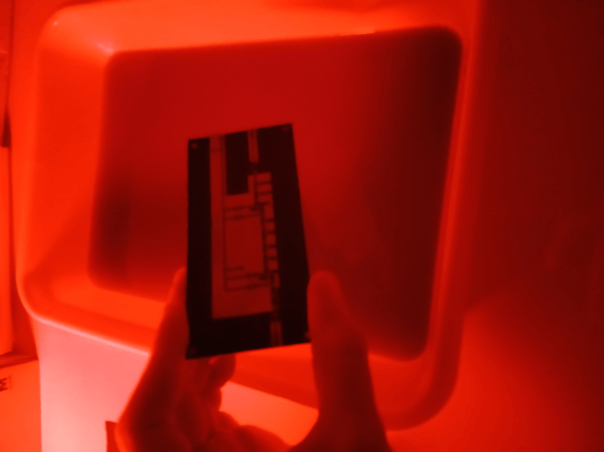
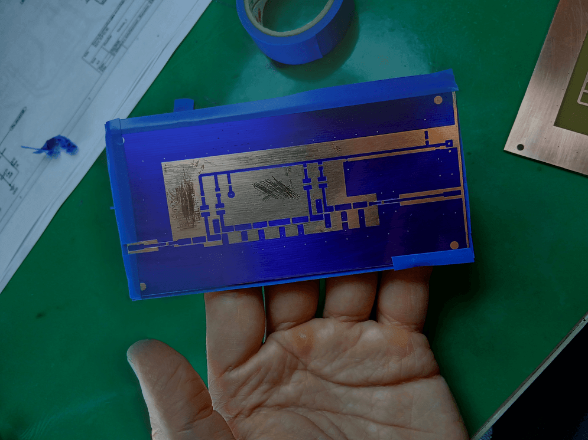
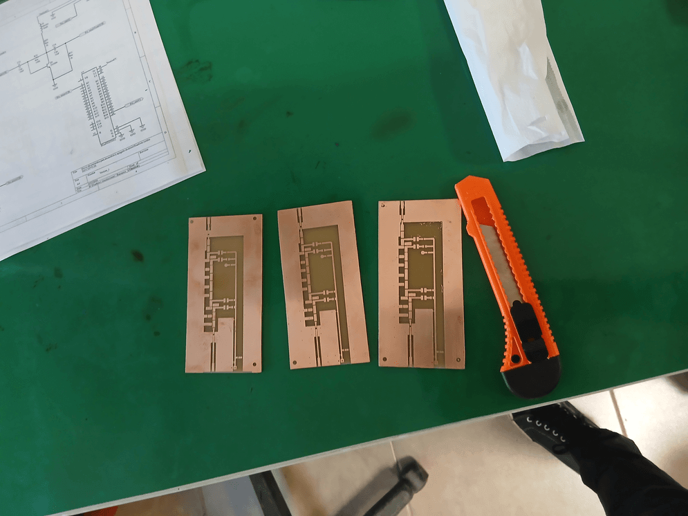
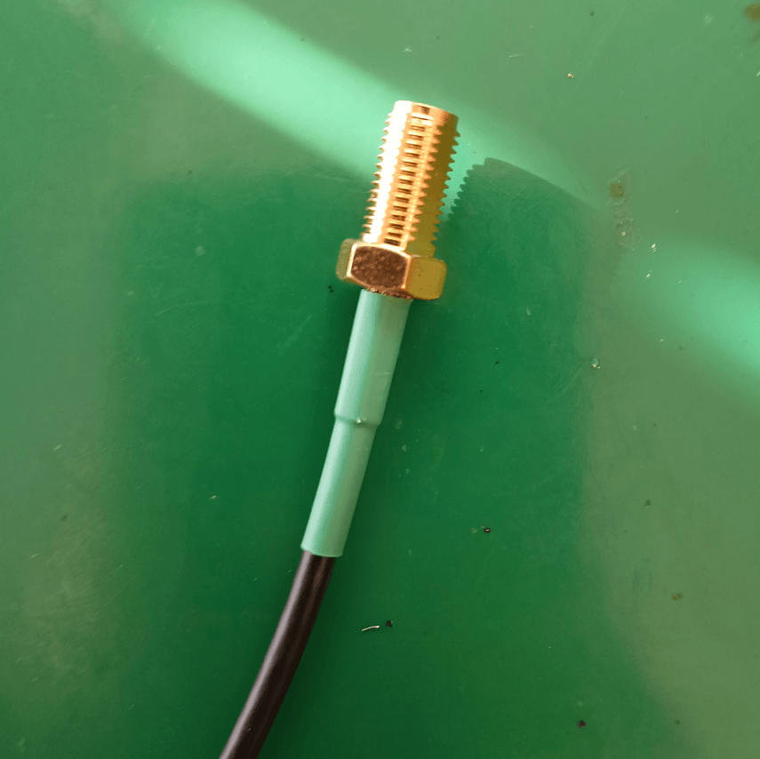
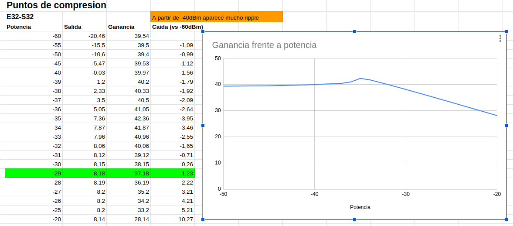

Project Context
The Telecommunications Engineering Department at Instituto Balseiro is developing a ground station based on antenna arrays for receiving signals from Low Earth Orbit satellites. The current system has two complete receive chains, and the project consisted of adding two additional channels to double its capacity.
This supervised professional practice was carried out as a two-person team covering the implementation: PCB fabrication, SMD component soldering, cabling assembly, final mounting, and experimental characterization of the modules.
PCB Fabrication

The first step was to print the four boards required for the system: two LNAs and two PAs. All are double-sided FR4.
The printing process followed the UV exposure and chemical etching technique. We carefully polished the copper surface, applied the photosensitive film under red lighting, and after aligning and securing the boards with the transparencies, we exposed them for 5 to 6 minutes in the UV exposure unit. Developing and etching with ferric chloride in a water bath completed the chemical copper removal, and any minor defects were corrected by hand with manual tools.
The entire process was carried out with extreme cleanliness and close attention to detail at every step. Once the boards were etched, we checked with a multimeter for any breaks or short circuits. All were functional and ready for the soldering stage.

Film

Darkroom

UV exposure

Chemical developing

Board ready for ferric chloride

Final touch-ups
Component Soldering
The soldering process had two stages. First, the SAW filters were soldered using an LPKF Protoflow S/N2 reflow oven, following a pre-established temperature profile.
The remaining components (transistors, resistors, capacitors, and inductors, all 0603-size SMD) were hand-soldered with a soldering iron. The task requires patience and a steady hand: with a magnifying lens and tweezers, we placed each component and applied just the right amount of solder to achieve shiny, neat joints. We barely used any flux, as it was not necessary and we preferred to keep the boards clean. The solder joints were notably clean, and the modules were ready for the next stage.
Cabling, Connectors, and Assembly
For the internal connections of the modules we used RG174 coaxial cable, flexible and easy to route inside the enclosures. For external connections, which cover longer distances and are more exposed, we used RG58, thicker and better shielded.
Assembling the SMA connectors was meticulous work: stripping the cable to the exact length, soldering the center conductor, and then crimping the braid with the proper tool. Each connection came out firm and even.

Cable stripping

Center conductor soldering

Braid crimping

Finished connector
Instead of using intermediate connectors, we soldered the cables directly to the boards. This reduces losses and potential failure points. To minimize shield inductance, we soldered it at multiple points, effectively placing them in parallel. We paid special attention to avoiding short circuits and checking that no loose strands remained from the center conductor or the braid (both are multi-strand and could cause issues down the line). Each solder joint was verified with a multimeter before moving on.
With the cables ready, we prepared the aluminum enclosures that would house the modules. We drilled them to mount the SMA and BNC connectors, and also to install the metal standoffs where the boards would be screwed in. The final assembly came out clean and robust: one box with two LNAs and another with the four PAs, with all internal and external connections in place.
Experimental Characterization
Throughout the assembly process we carried out quick measurements with the VNA and the spectrum analyzer to verify that each stage was working as expected. Once the entire system was mounted in its final enclosures, we moved on to the full characterization.
General Setup and Standardization
For the final measurements we standardized the entire system: we assigned clear labels to every port on every box, physically tagged each connection, and agreed on a consistent naming convention for saving files. This kept the whole process neat and traceable, allowing us to interpret each measurement without ambiguity.
The procedure was the same for all measurements:
- Low input power (-45 / -60 / -100 dBm as appropriate) and center frequency at 436.5 MHz.
- Each box powered with its dedicated supplies at 6 and 5 V respectively.
- 50 Ω loads on all unused ports.
S-Parameter Measurement (VNA)
With the VNA we measured the S-parameters of each module, a direct way to characterize the linear behavior of the amplifiers. For every connection — input to output, port by port — we saved an .s2p file recording the full frequency sweep. This allowed us to see at a glance whether gain was as expected, whether impedance matching was within spec, and whether isolation between ports was behaving correctly.
The amplifiers showed gain close to 40 dB at the operating frequency, with matching and isolation within expected values. We verified that the amplification peak was aligned with the SAW filter center frequency (436.5 MHz), and swept the full out-of-band range to detect any parasitic resonances, spurious oscillations, or abrupt drop-offs that might indicate a problem. A few modules showed minor variations, but nothing outside what is reasonable for a hand-assembled prototype. Having the complete sweep of every module documented in the .s2p files gave us a solid baseline to later cross-check against the nonlinear measurements from the spectrum analyzer.
Spectrum Analyzer Measurement

Using the spectrum analyzer and a signal generator, we checked the full spectrum of each circuit. We started with a wide resolution bandwidth filter for an overview, then narrowed it to 1 kHz (the minimum of the instrument) for the final measurement.
This was the stage where I internalized the importance of measurement judgment the most. It is not about measuring everything you can, but about understanding what is worth measuring. Learning to adjust the filter and span to balance speed and accuracy, prioritizing the combinations that actually yield useful information, and saving only relevant measurements and notes to avoid drowning in useless data. The discipline of asking myself whether what I am doing adds value or is just inertia is what I take away most from this stage.
1 dB Compression Point and Third-Order Intercept

To characterize the nonlinearity of the amplifiers, we performed two types of measurements: the 1 dB compression point (P1dB) and the third-order intercept point (IP3). In both cases we adjusted the span and resolution bandwidth of the analyzer as each test required, and used spreadsheets to process data in real time.
For P1dB, we manually increased the signal generator power and recorded the peak values on the analyzer. With a table in Google Sheets, the gain was calculated automatically and we could see in real time when it dropped by 1 dB from the initial value.
For IP3, we injected two signals offset by ±1.5 MHz from the center frequency (435 MHz and 438 MHz), and measured the third-order spurs appearing at 432 MHz and 441 MHz. We used two signal generators, combined them with a coupler, and gradually increased the power from a low level until the spurs were clearly identifiable. At each power level we recorded four values: the power of the two fundamental tones and the power of the two spurs.
With the data loaded into Google Sheets, we calculated the slope and the intercept, and projected the cross-over point. The P1dB and IP3 values obtained were consistent with the amplifier design, with compression and intercept points in line with the observed gain (see tables in the images of this section).
Compression Point

Third-Order Intercept

Final Assembly and Takeaways

With all modules characterized and verified, we mounted them in the final external enclosure. The whole system was integrated into a single cabinet, ready for installation in the ground station.
The entire process of this professional practice left me with a cross-cutting lesson that applies to every stage, from soldering to measurements: having the judgment to decide what to do and, more importantly, what not to do.
In soldering, learning how much to clean and perfect, and when to call a joint good enough. In measurements, knowing which parameters were worth measuring, which combinations provided real information, and which were just noise. In documentation, noting only what is relevant without filling pages with useless data.
It is very easy to start doing things that seem useful but are not. Spending hours on irrelevant measurement combinations, redoing solder joints that were already fine, or documenting trivial details that add nothing. The real craft lies in knowing when to stop, what is worth doing, and what is a waste of time. Understanding that, I believe, is what sets apart someone who produces quickly and well from someone who gets lost in unimportant details.